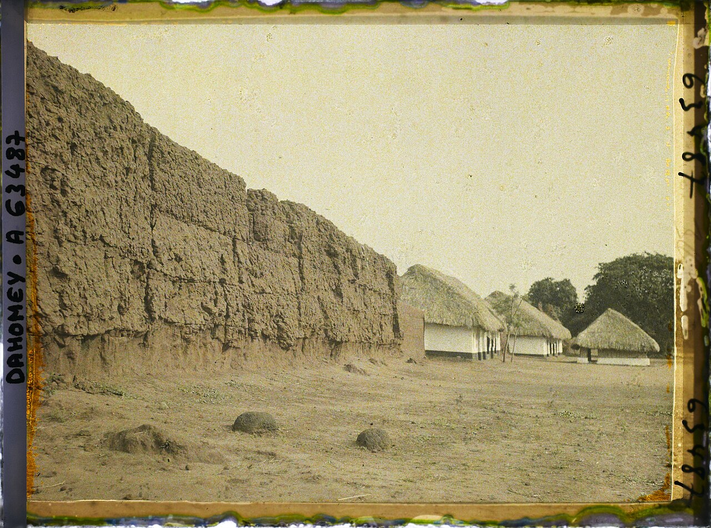
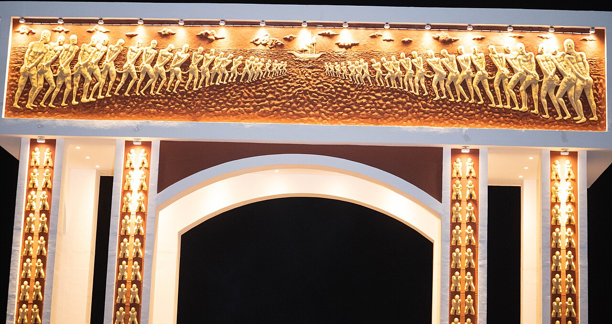
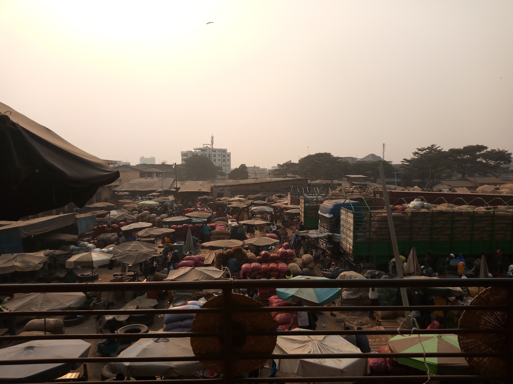
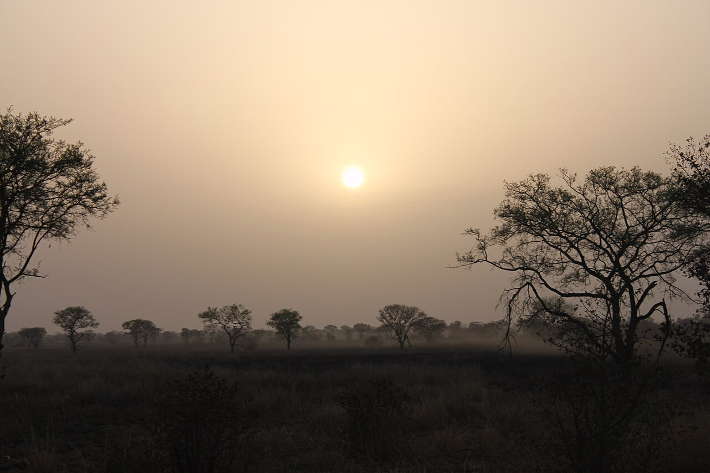

Partez à la découverte d'une nation fascinante _ royaumes légendaires, arts ancestraux, spiritualité vodoun, saveurs authentiques et paysages à couper le souffle.
Commencer l'explorationLe Bénin est un pays d'Afrique de l'Ouest anciennement connu sous le nom de Dahomey. Berceau du Vodoun, patrie des Amazones et héritier de royaumes millénaires, il porte en lui une fierté et une richesse culturelle incomparables.
De la côte atlantique aux savanes du nord, en passant par les palais d'Abomey classés à l'UNESCO, chaque coin de ce pays recèle une histoire à raconter, une tradition à découvrir, une saveur à goûter.
En savoir plusHistoire, géographie, villes emblématiques et chiffres clés d'une nation fière.
Découvrir
Bas-reliefs d'Abomey, appliqués sur tissu, sculptures vodoun et artistes contemporains.
Découvrir
Les rois du Dahomey, le Vodoun et ses traditions, cérémonies et rituels ancestraux.
Découvrir
Akassa, sauce gluante, sodabi, street food _ les saveurs authentiques du Bénin.
Découvrir
Ouidah, Ganvié, Pendjari, palais d'Abomey _ les sites incontournables du Bénin.
DécouvrirUne question, une suggestion ? Contactez-nous pour en savoir plus sur le Bénin.
Nous contacter →Le Bénin — une fois connu, ne vous quitte plus jamais.Le Bénin Et Ses Découvertes
Célébrée à Ouidah chaque 10 janvier, cette fête rassemble des milliers de fidèles et de touristes autour de danses, rituels et processions en l'honneur des divinités vodoun.
Grande fête royale du peuple Bariba de Parakou marquée par des démonstrations équestres spectaculaires, des danses guerrières et des tenues royales somptueuses.
Cérémonie traditionnelle des couvents vodoun d'Abomey, occasion rare d'assister à des rituels ancestraux préservés depuis des siècles au cœur de l'ancien Dahomey.